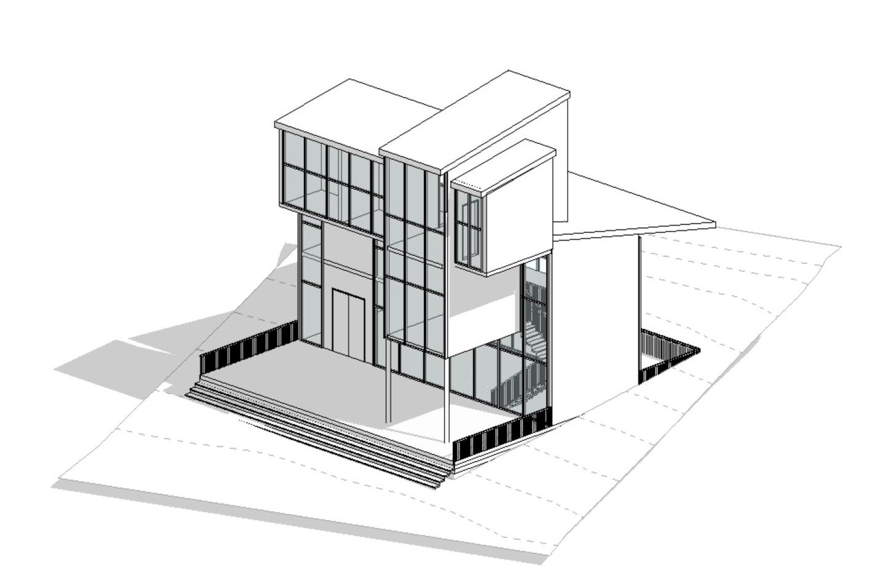
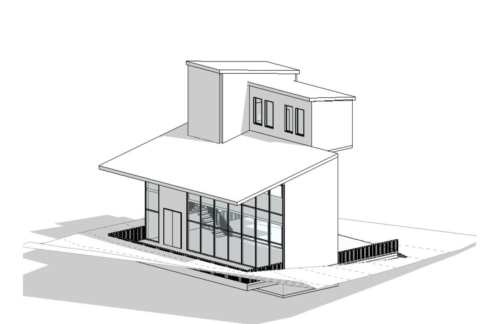
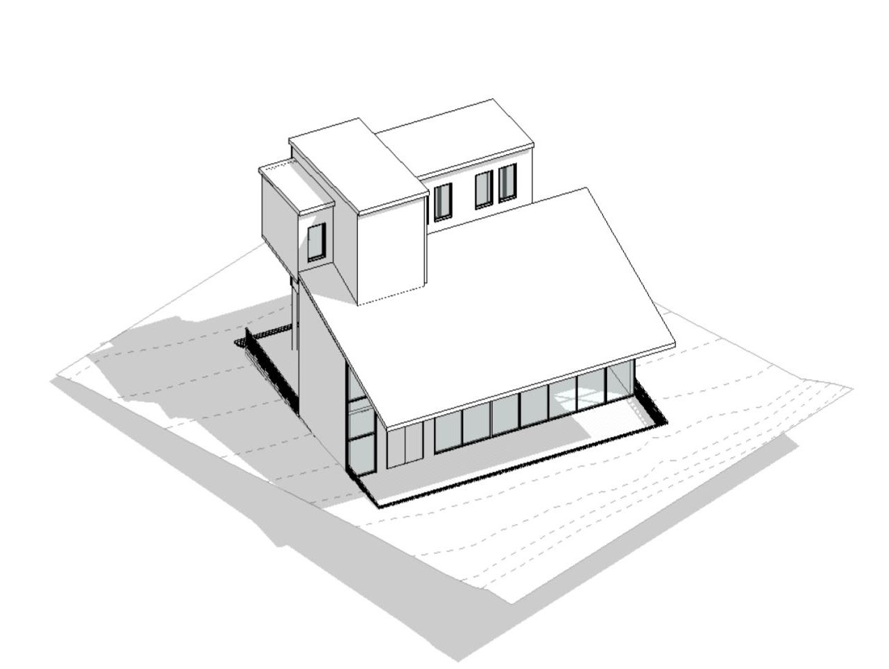
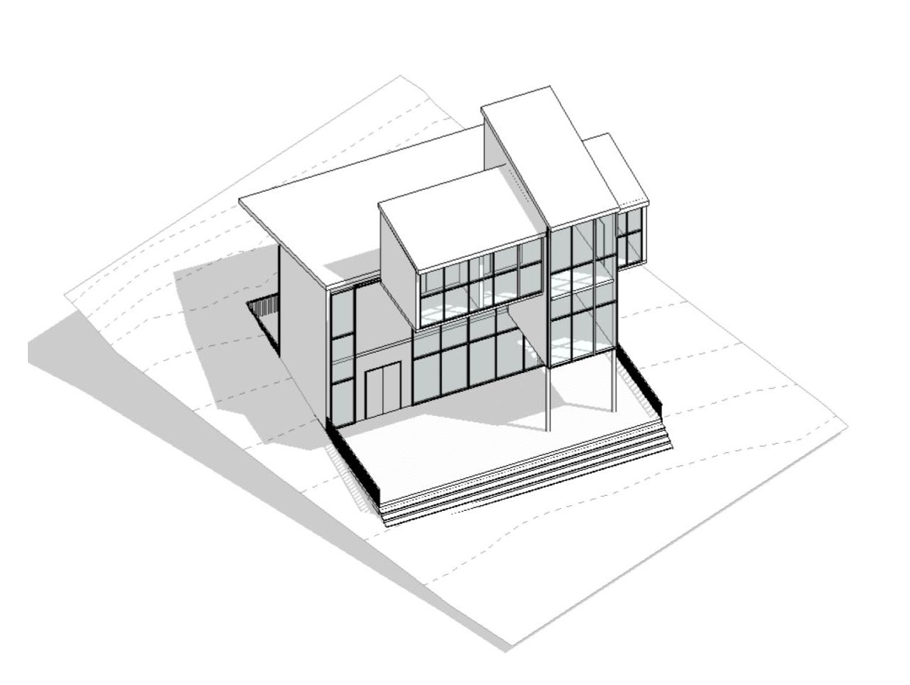
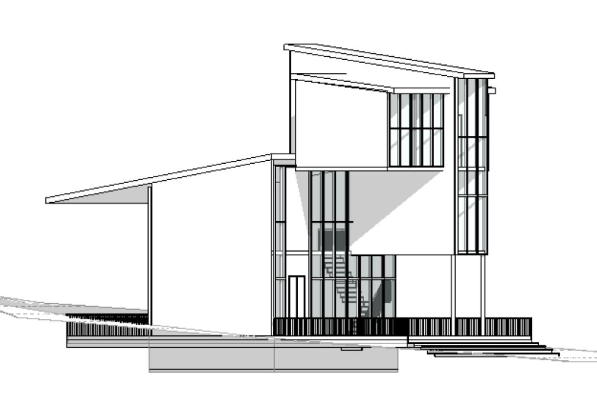
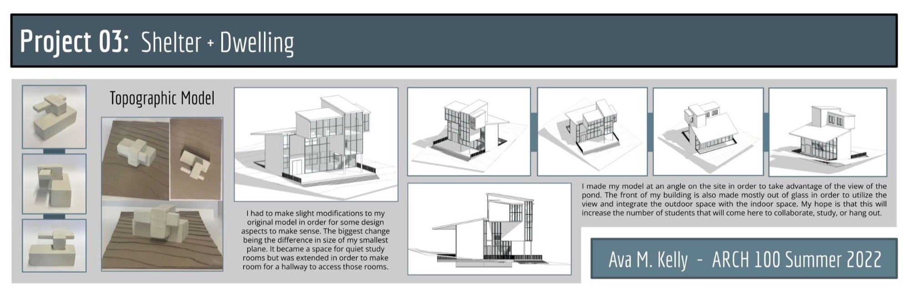
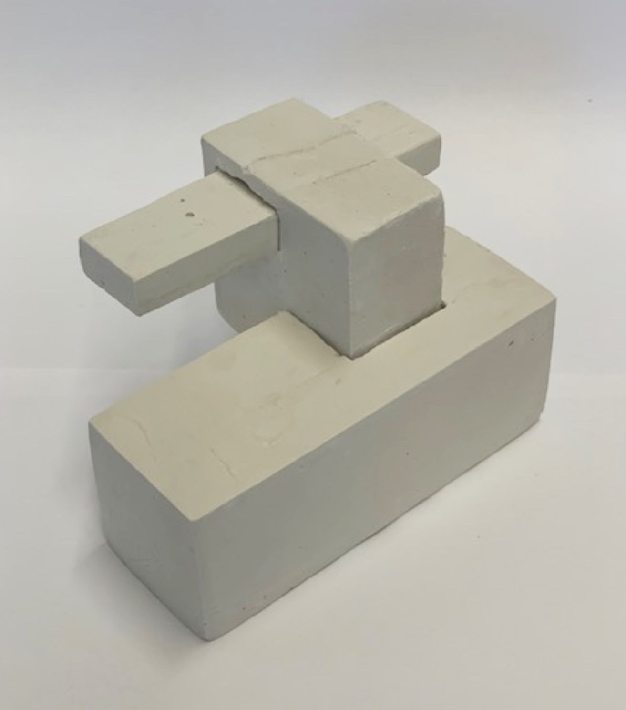
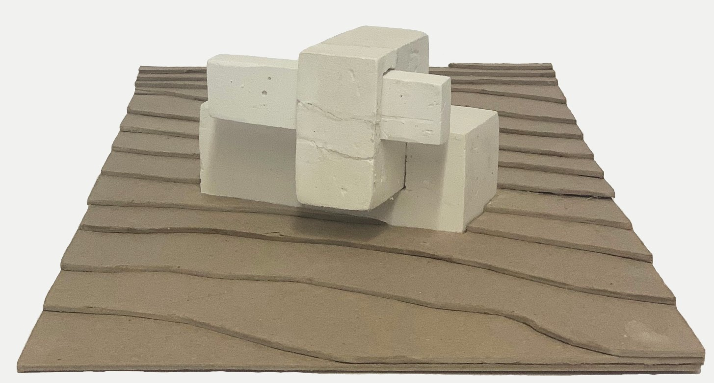
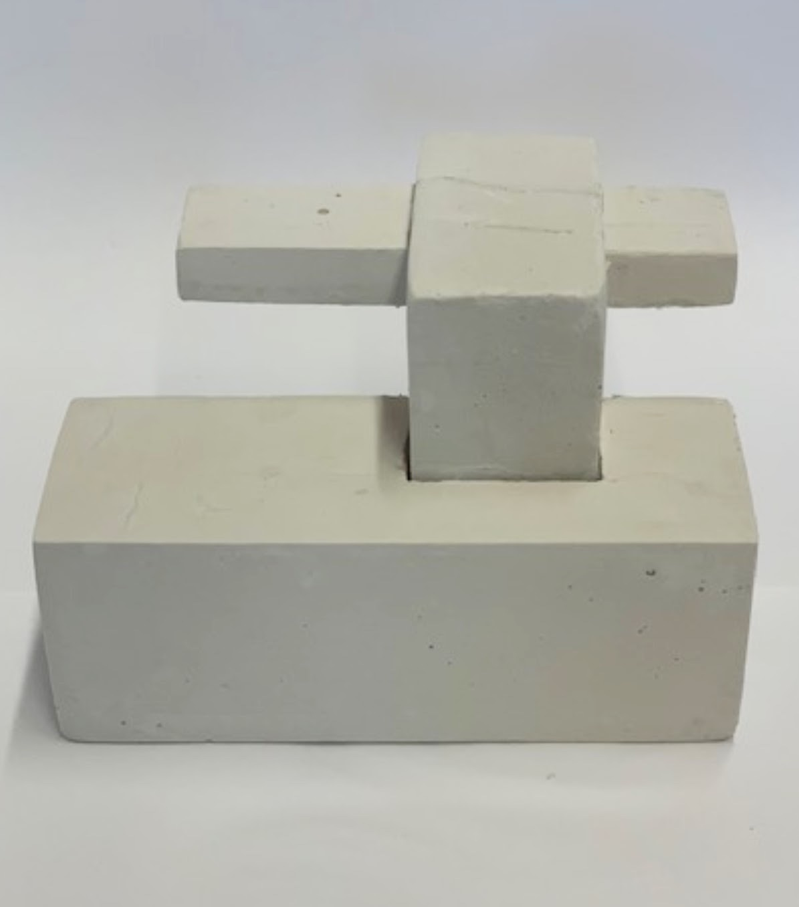
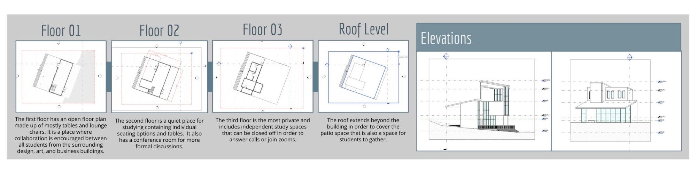

Shelter + Dwelling
Project 03: a building for students, set at an angle on its site to take in the view of the pond.
I made my model at an angle on the site in order to take advantage of the view of the pond. The front of my building is also made mostly out of glass in order to utilize the view and integrate the outdoor space with the indoor space. My hope is that this will increase the number of students that will come here to collaborate, study, or hang out.







Topographic model
I had to make slight modifications to my original model in order for some design aspects to make sense. The biggest change being the difference in size of my smallest plane. It became a space for quiet study rooms but was extended in order to make room for a hallway to access those rooms.



Plans and elevations
- Floor 01: The first floor has an open floor plan made up of mostly tables and lounge chairs. It is a place where collaboration is encouraged between all students from the surrounding design, art, and business buildings.
- Floor 02: The second floor is a quiet place for studying containing individual seating options and tables. It also has a conference room for more formal discussions.
- Floor 03: The third floor is the most private and includes independent study spaces that can be closed off in order to answer calls or join zooms.
- Roof Level: The roof extends beyond the building in order to cover the patio space that is also a space for students to gather.
